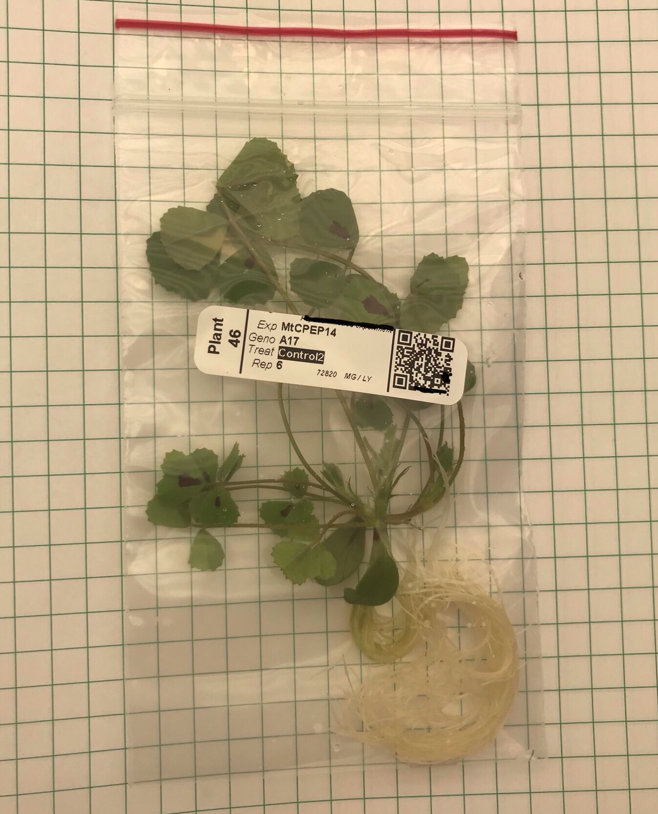
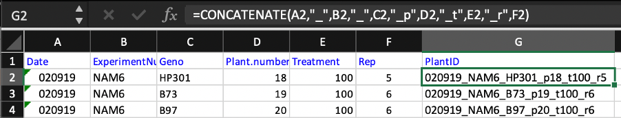

How to use a PlantID system to organize experiments with barcodes

To help minimize sample and treatment mix ups during experiments it is good practice to print out plant labels in advance. For large scale experiments doing so is also a time-saver. Here I use a Barcode printer software (BarTender, paid but there are many alternatives available) to design and print to a Zebra barcode printer. The software uses a .CSV (table) which I provide containing information of all samples to populate the print outs.
Here the label has a human readable part as well as a QR code. Not having the human readable part is possible for automated analysis setups and that is a benefit in reducing unintended human biases during experiments. Multiple labels can be printed out for each plant or the label can be peeled off and go with the plant.
I make the barcodes using excel and picked up this trick from my PhD supervisor Darren Wells at Nottingham. Convey all information necessary about the experiment and plants with unqiue PlantIDs (eg. Replicate number combination with genotype and treatment in my experiments make each ID unique). Then use the Concatenate function to merge the information into a single tag.
=CONCATENATE(A2,"_",B2,"_",C2,"_p",D2,"_t",E2,"_r",F2)
eg. 020919_NAM6_HP301_p18_t100_r5 (PlantID)
Come up with your own tag and keep it consistent between experiments so your pipeline is easier and consistent. The PlantID is used to create a QR box. During data collection a QR scanner can be used to easily assign data to the correct plant. I use underscores to separate out the tag as this is easy to work with in R scripts. Note some data analysis softwares have text character limits so a unique number (eg. Sample 10001 is also a valid practice – if you do this ensure you do not lose the metadata for what is what!
After data collection I process it all using R. Example code below for loading in the PlantIDs
If you find this useful or have suggestions for improvement to this system please get in touch!